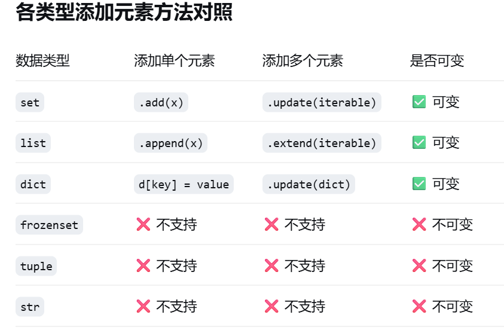

set 类型¶
无序、不可变的数据类型，自动去重
1 set 的定义¶
set 是 Python 中的一种可变、无序、且元素唯一的容器。它主要用于去重和进行数学上的集合运算。
Info
在 Python 内部，set 是通过哈希表 (Hash Table) 实现的。它本质上是一个没有存储 "Value" 的字典。这种结构决定了它在检查某个元素是否存在时具有极高的效率。
1.1 核心特性¶
Warning
唯一性 (Uniqueness)：集合会自动过滤重复元素，同一个对象在集合中只会出现一次。
- 无序性 (Unordered)：集合不记录元素的插入顺序。因此，集合不支持索引 (Indexing) 或切片 (Slicing)。
- 元素必须可哈希 (Hashable)：集合的元素必须是不可变对象（如数字、字符串、元组）。列表或字典等可变对象不能作为集合元素。
- 可变性 (Mutability)：虽然集合中的单个元素必须不可变，但集合本身是可变的，可以动态添加或删除元素。
2 集合的建增删查¶
2.1 创建 (Creation)¶
集合可以通过大括号或构造函数创建。
空集合的创建
创建一个空集合必须使用 set()，而不能使用 {}。因为 {} 在 Python 中被预留用于创建空字典。
- 直接创建：使用
{}包含元素（元素自动去重）。 - 构造函数：使用
set(iterable)将列表、元组或字符串转换为集合。 - 集合推导式：
{expression for item in iterable if condition}。
# 1. 构造函数
s1 = set([1, 2, 2, 3]) # {1, 2, 3}
# 2. 集合推导式：生成 0-9 偶数的平方集合
s2 = {x**2 for x in range(10) if x % 2 == 0}
2.2 增加 (Addition)¶
集合是可变对象，支持动态添加元素。由于集合无序，新元素的位置是不确定的。
| 分类 | 方法/操作 | 说明 | 返回值 | 拷贝/引用类型 | 复杂度 |
|---|---|---|---|---|---|
| 基础增加 | .add(x) |
向集合添加元素 \(x\)，若已存在则跳过 | None |
原地修改 | \(O(1)\) |
.update(m) |
合并 \(m\) 中的元素（相当于 a \|= b） |
None |
原地修改 | \(O(len(m))\) | |
| 复制与引用 | s2 = s1 |
将变量 \(s2\) 指向 \(s1\) 相同的内存地址 | - | 引用传递 | \(O(1)\) |
.copy() |
创建集合的一个副本 | 新集合 | 浅拷贝 | \(O(n)\) |

2.3 删除 (Deletion)¶
Info
针对元素是否存在以及删除逻辑的不同，Python 提供了四种主要的删除方法。这些方法均属于原地修改，不会创建新的集合对象。
下面是删除操作用表
| 方法 | 说明 | 返回值 | 复杂度 |
|---|---|---|---|
.remove(x) |
从集合中删除元素 \(x\)。若 \(x\) 不存在，则抛出 KeyError 异常 |
None |
\(O(1)\) |
.discard(x) |
从集合中删除元素 \(x\)。若 \(x\) 不存在，则静默处理（不报错） | None |
\(O(1)\) |
.pop() |
移除并返回集合中的一个随机元素（基于哈希表内部顺序）。若集合为空则报错 | 被移除的元素值 | \(O(1)\) |
.clear() |
移除集合中的所有元素，使其成为空集合（set()） |
None |
\(O(1)\) |
2.4 查找与成员检查 (Lookup)¶
由于集合基于哈希表实现，查找操作是集合最高效的应用场景。
2.4.1 成员运算符¶
x in s：判断元素 \(x\) 是否在集合 \(s\) 中。x not in s：判断元素 \(x\) 是否不在集合 \(s\) 中。
2.4.2 性能逻辑¶
Info
与 list 的线性搜索 (\(O(n)\)) 不同，set 的查找是通过计算元素的哈希值直接定位。无论集合中有多少元素，查找的时间复杂度始终保持在 \(O(1)\)（平均情况）。
# 高效的成员检查
data_set = {i for i in range(1000000)}
if 999999 in data_set: # 瞬时完成
print("Found")
3 集合的修改与操作¶
3.1 元素增删方法¶
3.1 元素增删与复制方法¶
| 分类 | 方法 | 说明 | 返回值 | 拷贝/引用类型 |
|---|---|---|---|---|
| 增加 | .add(x) |
向集合中添加一个元素 \(x\)，若已存在则跳过 | None |
原地修改 |
.update(m) |
合并另一个可迭代对象 \(m\) 中的所有元素 | None |
原地修改 | |
| 删除 | .remove(x) |
删除元素 \(x\)，若不存在则报错 KeyError |
None |
原地修改 |
.discard(x) |
删除元素 \(x\)，若不存在则静默处理（不报错） | None |
原地修改 | |
.pop() |
随机移除并返回集合中的一个元素 | 被移除的元素值 | 原地修改 | |
.clear() |
移除集合中的所有元素 | None |
原地修改 | |
| 复制 | .copy() |
创建集合的一个副本 | 相同元素的新集合 | 浅拷贝 |
4 集合运算 (Set Operations)¶
这是 set 类型最核心的优势，对应数学中的集合逻辑。
4.1 集合运算与关系判断¶
| 运算/关系名称 | 运算符 | 方法调用 | 描述 | 返回值类型 |
|---|---|---|---|---|
| 并集 | a \| b |
a.union(b) |
返回包含 a 和 b 中所有元素的新集合 | set |
| 交集 | a & b |
a.intersection(b) |
返回同时存在于 a 和 b 中的元素的新集合 | set |
| 差集 | a - b |
a.difference(b) |
返回在 a 中但不在 b 中的元素的新集合 | set |
| 对称差集 | a ^ b |
a.symmetric_difference(b) |
返回只属于 a 或只属于 b（非共有）的元素 | set |
| 子集 | a <= b |
a.issubset(b) |
判断 a 中的所有元素是否都在 b 中 | bool |
| 真子集 | a < b |
—— | 判断 a 是否为 b 的子集且 \(a \neq b\) | bool |
| 超集 | a >= b |
a.issuperset(b) |
判断 b 中的所有元素是否都在 a 中 | bool |
| 真超集 | a > b |
—— | 判断 a 是否为 b 的超集且 \(a \neq b\) | bool |
| 不相交 | —— | a.isdisjoint(b) |
判断 a 和 b 是否没有公共元素（交集为空则返回 True） |
bool |
4.2 操作补充：¶
- 真子集/真超集：Python 没有为“真”关系提供专门的方法调用（Method），只能使用比较运算符
<或>。 - 不相交判断 (
isdisjoint)：该方法接受任何可迭代对象作为参数，不局限于集合。如果 a 与参数对象没有共同元素，则返回True。 - 运算符 vs 方法：
- 使用运算符（如
|,&）时，两边必须都是set类型。 - 使用方法（如
.union(),.intersection()）时，参数可以是任何可迭代对象（列表、元组等），Python 会自动将其转换为集合后运算。
- 使用运算符（如
5 内存机制与性能¶
5.1 哈希查找¶
由于集合不存储位置信息，它通过计算元素的哈希值直接定位内存地址。
5.2 复杂度对比表¶
| 操作 | 复杂度 | 性能提示 |
|---|---|---|
包含检查 x in s |
\(O(1)\) | 极快，不随数据量增大而变慢 |
| 添加/删除 | \(O(1)\) | 恒定时间操作 |
| 并/交/差运算 | \(O(n+m)\) | 线性时间，取决于参与运算的集合大小 |
注意事项¶
- 不可索引性：不能使用
s[0]。如果需要获取特定元素，通常需要将其转换为列表list(s)，但这会丢失 \(O(1)\) 的查找优势。 - 元素限制：集合中不能存放
list、set、dict。如果需要存放集合的集合，请使用不可变集合frozenset。 - 去重不保证顺序：当把
list转为set去重时，原有的元素顺序会丢失。如果需要保持顺序去重，通常使用dict.fromkeys(l)。ordered_unique = list(dict.fromkeys(my_list))